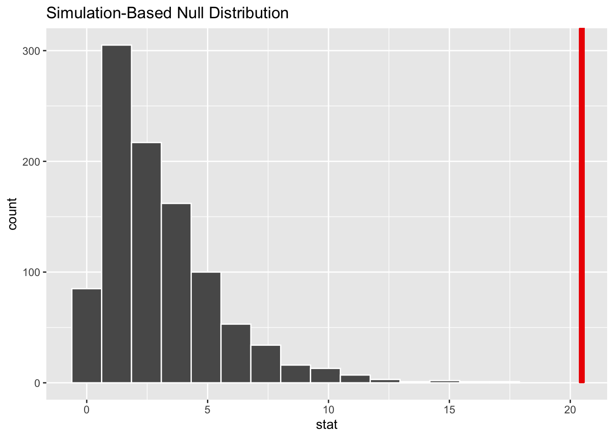

1 Background and Significance
During the past 50 years, we experienced the greatest growth in computer processing power. There is more computational power in our phones right now than NASA’s Apollo guidance computer which is used for the first moon landing. This increase in cheap computational power creates the foundation of modern statistics, from bootstrap distribution to machine learning. Computational power on a base level is defined by tiny transistors that controls voltages, which together forms groups of simple logic that can be manipulated. However, years of study and practice is required to operate on that level. To effectively utilize and lower the barriers of entry, programmers created programming languages as a layer of abstraction to utilize the computational power to solve problems.
If you were given the question, would you choose between a pair of scissors or an axe? The logical thought is most likely ... for what? Different tools are designed for different task, and this is the same for programming languages. In the same sense that you wouldn’t use an axe to cut a piece of paper, developers wouldn’t want to use hardware specific languages like circuit-python to build a website. Due to the ease of creating a programming language and the ever-changing nature of the technology, hundreds of Turing complete languages (programming language that contains all the necessary feature to solve any computational problem) are created every year. What started as a simple layer of abstraction had turned into a headache for developers, on which programming language to learn and use for the next project. Many interesting research have already conducted on what makes a good programming language, however most of too specific and can’t be used as a guideline. In addition, we believe there exist other non-technical variables that will influence the popularity of the programming language.
In this paper, we intend to explore what feature drives the usage of that programming language. To create a reference, for language creators, on what features should a language prioritize and which to ignore. On a more meta level, we want to investigate what actually drives the popularity of a programming language, whether the actual feature set of the language or its social media presence. It is not far-fetched to believe, developers may simply search on Google and stack overflow to determine whether a language is worth using without considering the technical details. We hope this paper can offer insights, for future languages creators on how to create the next widely adapted languages.
2 Methods
Data collection The raw data set was originally created as part of a larger collection of data set to create a decision model for programming language selection by Farshidi, Siamakl; Jansen, Slinger and Deldar, Mahdi. Where the focus of the research is in several industry case studies accompanied by expert interviews on which programming language is selected for what project in industry[1]. This raw data set in particular was scrapped directly from the web with the cutoff date of June 2021. This list of programming languages used are all that were listed on wiki at the time, meaning the list of programming languages are not complete, but all the most popular and impactful languages are included. All the social media information is scraped from each respective platforms. Note Stack Overflow posts, Linkdin profile mentions and Google hits are all-time data, where Github commits are all repositories that have a recent commit (the project is still used as a dependency or there is a recent commit), which is time sensitive by nature. It also nature to assume a programming language released more recently will naturally have a lower social media presence and project adoption, but this is not considered during data collection. Finally, the programming features are scrapped from each programming language’s Wikipedia page, this introduced possible errors where a languages have a feature, but is not explicitly mentioned and thus ignored.
Variable creation Several additional variables are created to understand the research question, alongside with some unique interpretation of variables. First the variable google_hits is interpreted as the popularity indicator. Since, when and what people search is private (different than a post of social media), this can be used to indicate when people are curios about the language, hence the popularity. A new categorical variable with 4 levels is created called popularity. The variable is created by splitting the google_hits into 4 parts using quartiles, and assigning it one of four levels of popularity (not popular, somewhat popular, popular and very popular)
Second, all numerical variables in the data set are extremely rightward skewed. This makes sense intuitively, as one can assume languages like Python and R will be very popular and thus with people posting and sharing about it on social media. Most other languages will remain unknown to the vast majority of people. If we attempt to fit a linear regression model directly, the distribution of the residual will not be heteroscedastic or normally distributed. To linearize the relationship the log transformation of all the numerical variables are taken and are seen as equivalent to the original variable in relation to the rest of the paper.
Analytic methods To explore the first idea, what technical features drives the popularity of the programming languages, we decided to do a multiple hypothesis testing for independence using the chi-squared test, between the programming feature and popularity. First each programming language feature will be checked against the conditions of the chi-squared test. The null distribution will be generated assuming the independence between whether the PL (programming language) have the feature or not and its popularity. The observed statistics will then be calculated using the data set. Then the probability of the observation under the null distribution will be calculated. With multiple programming features, the chi-squared test will be repeated for every feature that satisfies the the chi-squared test assumptions. Finally, since multiple hypothesis testing is conducted and to avoid p-hacking, the alpha value (0.05) will be divided by the number of tests. The p-value of all the significant results will be compared against each other to create a ranked list of programming features that directly impacts popularity.
To explore the second idea, what drives the popularity of a languages in general, a multiple linear regression will be used with popularity as the response variable (y). The possible numerical predictors are the number of stack overflow posts, Linkdin profile mentions and github hits. The possible categorical predictors will be the top three programming features returned from the multiple hypothesis testing.
Each model will be trained and tested, by splitting the existing data set in to a testing set (20%) and a non-testing set (80%). The non-testing set will be further divided into a training (75%) and a validation set. The hypothesized models will first be fitted against the training data and then compared using the validation data. The best fitted model will be re-trained on the entire non-testing set and tested on the testing set to determine, whether popularity can be predicted using a linear regression model.
With the result from the chisq test and linear regression model, we can hopefully discover some insights on what drives the popularity of a programming language.
3 Results
The results from multiple hypothesis testing is disappointing. Out of all 21 programming features provided by the data set, only 5 passes the assumption for the chi-squared test. 15 out of the 16 test cases, either the feature is unique (only one programming language have that feature) or a total of less than 30 languages have that feature. This is a direct result of the data set being web-scrapped. Developers are known for terrible documentation, so a lot of one off or non-rigorous features are listed and scrapped, which caused significant bloat to the data set. The special case dropped from testing is due to an obvious mismatch between the feature and the language, so the entire feature is dropped. Below shows the results from the 5 test cases used in hypothesis testing.
| Programming feature | P - value |
| Procedural | 0.077 |
| Functional | 0.008 |
| Object-Oriented | 0.516 |
| Concurrent | 0.07 |
| Scripting | 0.05 |
In relation to the adjust alpha value \(alpha = 0.05 / 5 = 0.01\), only one programming feature showed statistically significant evidence that the null hypothesis the popularity of the languages and whether language is functional are independent can be rejected (highlighted by the Null distribution below). And we can conclude a programming language being functional have an impact on its popularity.
The results from the multiple linear regression model is equally as disappointing. 8 models are tested with their validation set results are shown below:
| Predictors | rsq | rmse | mae |
|---|---|---|---|
| stack overflow | 0.0849 | 2.71 | 2.25 |
| linkdin | 0.0769 | 2.72 | 2.20 |
| github hits | 0.199 | 2.54 | 1.99 |
| github hits + stack overflow | 0.215 | 2.51 | 1.98 |
| linkdin + stack overflow | 0.201 | 2.54 | 1.99 |
| github hits + stack overflow | 0.122 | 2.65 | 2.18 |
| github hits + stack overflow + linkdin | 0.215 | 2.51 | 1.98 |
| github hits + stack overflow + linkdin + functional | 0.211 | 2.52 | 1.98 |
The models that minimized rmse and mae while maximizing rsq is using predictor github hits and stack overflow. Finally by refitting the model using the not-testing data, the following model is returned
\[y = 11.6 + 0.627x_1 + 0.125x_2\]
with testing rmse of 2.75, rsq of 0.334 and mae of 1.95. Here \(x_1\) is the log-transformed GitHub hit (\(log(GH)\)), \(x_2\) is the log-transformed stack-overflow (\(log(SO)\)) and \(y\) is the log-transformed Google hits (\(log(GG)\)). One could obtain then \[\hat{GG} = (109097.8) GH^{0.627} SO^{0.125}.\]
4 Discussion/Conclusions
In conclusion, due to the server limitation of the data set, we didn’t receive a definite result that a programming feature influence a langue’s popularity. [Although one feature is statistically significant, but it doesn’t make sense only one feature by it self determines the popularity] Even though, the paper can’t reject the null hypothesis that features and popularity is independent, it doesn’t disprove there dependency.
The results from the linear regression model is not any better. Only 33.4% of the variance in the observed popularity (to be precise, logarithm of the Google hits) can be explained model, indicating a bad fit. Once again, this doesn’t deny the relationship between popularity and social media activity, but the paper indicates it is weakly correlated.
This analysis has some major limitations, the data being scrapped directly from the internet and the time sensitive nature of some data. Programming features are scrapped from its official documentation, however more obscure or less popular languages might have incomplete documentation. The potential missing data from this data set is treated as the programming language is missing that feature. Second it is natural to assume a more recent programming language will have a lower adoption rate than an older language, this gives an implicit lower weight to newly released languages.
Future research may take into account expert opinions or the number of industry project that uses the programming language to produce a more accurate model. Future work might also attempt to create a less region specific data set, as all the social media platforms used are US specific.
5 References (links after appendix)
6 Appendix
Libraries
library(tidyverse)
library(janitor)
library(tidymodels)
library(infer)
library(ggfortify)
library(vip)Data Wrangling
Below code chunk is the initial loading and cleaning of the data, as well as data creation in relation to the Method section.
# load data into R
remote = 'https://raw.githubusercontent.com'
account = '/ZichuPan'
folder = '/math_254_project/main'
file = '/raw_data.csv'
url <- str_c(remote, account, folder, file)
raw_data = read_csv(url)
# create clean and usable data
# change the column names to first row
colnames(raw_data) <- raw_data[1,]
# remove first row
df <- raw_data[-1,]
# remove column named NA
df <- df[,!(names(df) %in% 'NA')]
# remove unnecessary columns
df <-
df %>%
select(-URL,
-`TIOBE Index`,
-Rating,
-description,
-Supportability,
-Impact,
-Popularity,
-`Active community`,
-`Year of introduction`,
-`Latest edition (year)`)
# change data type to match data
class(df[[1]]) = "character"
for (i in 2:ncol(df)){
class(df[[i]]) = "numeric"
}
# change NA to 0
df[is.na(df)] <- 0
# variable creation
df <-
df %>%
mutate(social_media_presence =
df$stackoverflow +
df$LinkedIn +
df$`GitHub hits`)
temp <- quantile(df$`Google hits`, probability = c(0.25))
df <-
df %>%
mutate(popularity = if_else(df[5] >= median(`Google hits`),
if_else(df[5] >= temp[4], 'very popular', 'popular'),
if_else(df[5] >= temp[2], 'somewhat popular', 'not popular')))
# varible type adjustment
for (i in 6:26){
df[[i]] = factor(df[[i]])
}
df[[28]] = factor(df[[28]])
df <- clean_names(df)
view(df)Summary statistics/ Insights into data and some additional data modification
df$google_hits %>%
summary() Min. 1st Qu. Median Mean 3rd Qu. Max.
0 55750 497500 17964776 3572500 512000000 df %>%
ggplot(aes(x = google_hits)) +
geom_histogram()df %>%
ggplot(aes(x = log(google_hits))) +
geom_histogram()df %>%
ggplot(aes(x = log(google_hits))) +
geom_histogram()
df$stackoverflow %>%
summary() Min. 1st Qu. Median Mean 3rd Qu. Max.
0.0 0.0 0.0 19404.1 208.8 1824887.0 df %>%
ggplot(aes(x = stackoverflow)) +
geom_histogram()
df %>%
ggplot(aes(x = log(stackoverflow))) +
geom_histogram()df$git_hub_hits %>%
summary() Min. 1st Qu. Median Mean 3rd Qu. Max.
0.0 0.0 3.0 123.5 19.0 15471.0 df %>%
ggplot(aes(x = log(git_hub_hits + 1))) +
geom_histogram()df$linked_in %>%
summary() Min. 1st Qu. Median Mean 3rd Qu. Max.
0.0 2.0 21.0 1314.7 194.8 238277.0 df %>%
ggplot(aes(x = log(linked_in + 1))) +
geom_histogram()
df <-
df %>%
mutate(log_google_hits = log(google_hits + 1)) %>%
mutate(log_linked_in = log(linked_in + 1)) %>%
mutate(log_git_hub_hits = log(git_hub_hits + 1)) %>%
mutate(log_stackoverflow = log(stackoverflow + 1))Below examines the all the categorical variables of interest.
# removed (not unique, < 20)
df %>%
count(mathematical)# A tibble: 2 × 2
mathematical n
<fct> <int>
1 0 575
2 1 11# removed (unique)
df %>%
count(logical)# A tibble: 2 × 2
logical n
<fct> <int>
1 0 585
2 1 1# removed (not unique, < 20)
df %>%
count(realtime)# A tibble: 2 × 2
realtime n
<fct> <int>
1 0 582
2 1 4# removed (not unique, < 20)
df %>%
count(interpreted)# A tibble: 2 × 2
interpreted n
<fct> <int>
1 0 574
2 1 12# removed (not unique, < 20)
df %>%
count(procedural)# A tibble: 2 × 2
procedural n
<fct> <int>
1 0 424
2 1 162# not unique
df %>%
count(scripting)# A tibble: 2 × 2
scripting n
<fct> <int>
1 0 481
2 1 105# not unique
df %>%
count(functional)# A tibble: 2 × 2
functional n
<fct> <int>
1 0 440
2 1 146# not unique
df %>%
count(object_oriented)# A tibble: 2 × 2
object_oriented n
<fct> <int>
1 0 401
2 1 185# not unique
df %>%
count(concurrent)# A tibble: 2 × 2
concurrent n
<fct> <int>
1 0 530
2 1 56# removed (not unique, < 20)
df %>%
count(array)# A tibble: 2 × 2
array n
<fct> <int>
1 0 560
2 1 26# removed (not unique, < 20)
df %>%
count(mobile)# A tibble: 2 × 2
mobile n
<fct> <int>
1 0 581
2 1 5# removed (not unique, < 20)
df %>%
count(assembly)# A tibble: 2 × 2
assembly n
<fct> <int>
1 0 581
2 1 5# removed (not unique, < 20)
df %>%
count(text_oriented)# A tibble: 2 × 2
text_oriented n
<fct> <int>
1 0 563
2 1 23# removed (missing tag)
df %>%
count(xml_based)# A tibble: 1 × 2
xml_based n
<fct> <int>
1 0 586# removed (not unique, < 20)
df %>%
count(audio)# A tibble: 2 × 2
audio n
<fct> <int>
1 0 578
2 1 8# removed (not unique, < 20)
df %>%
count(x4gl)# A tibble: 2 × 2
x4gl n
<fct> <int>
1 0 578
2 1 8# removed (not unique, < 20)
df %>%
count(embedded)# A tibble: 2 × 2
embedded n
<fct> <int>
1 0 571
2 1 15# removed (not unique, < 20)
df %>%
count(query)# A tibble: 2 × 2
query n
<fct> <int>
1 0 562
2 1 24# removed (not unique, < 20)
df %>%
count(multimedia)# A tibble: 2 × 2
multimedia n
<fct> <int>
1 0 574
2 1 12# removed (not unique, < 20)
df %>%
count(graphical)# A tibble: 2 × 2
graphical n
<fct> <int>
1 0 582
2 1 4# removed (not unique, < 20)
df %>%
count(web)# A tibble: 2 × 2
web n
<fct> <int>
1 0 576
2 1 10# dropping columns
df <-
df %>%
select(-mathematical,
-logical,
-realtime,
-interpreted,
-mobile,
-assembly,
-text_oriented,
-xml_based,
-audio,
-x4gl,
-embedded,
-multimedia,
-graphical,
-web,
-array,
-query)Research Question 1
obs_stat <-
df %>%
specify(popularity~procedural) %>%
calculate(stat = 'Chisq')
degrees_freedom = (2-1)*(4-1)
degrees_freedom[1] 3null_dist <-
df %>%
specify(popularity~procedural) %>%
hypothesise(null = 'independence') %>%
generate(reps = 1000, type = 'permute') %>%
calculate(stat = 'chisq')
null_dist %>%
visualise() +
shade_p_value(obs_stat = obs_stat,
direction = 'right')null_dist %>%
get_p_value(obs_stat = obs_stat,
direction = 'right')# A tibble: 1 × 1
p_value
<dbl>
1 0.01obs_stat <-
df %>%
specify(popularity~scripting) %>%
calculate(stat = 'Chisq')
degrees_freedom = (2-1)*(4-1)
degrees_freedom[1] 3null_dist <-
df %>%
specify(popularity~scripting) %>%
hypothesise(null = 'independence') %>%
generate(reps = 1000, type = 'permute') %>%
calculate(stat = 'chisq')
null_dist %>%
visualise() +
shade_p_value(obs_stat = obs_stat,
direction = 'right')null_dist %>%
get_p_value(obs_stat = obs_stat,
direction = 'right')# A tibble: 1 × 1
p_value
<dbl>
1 0.062obs_stat <-
df %>%
specify(popularity~functional) %>%
calculate(stat = 'Chisq')
degrees_freedom = (2-1)*(4-1)
degrees_freedom[1] 3null_dist <-
df %>%
specify(popularity~functional) %>%
hypothesise(null = 'independence') %>%
generate(reps = 1000, type = 'permute') %>%
calculate(stat = 'chisq')
null_dist %>%
visualise() +
shade_p_value(obs_stat = obs_stat,
direction = 'right')
null_dist %>%
get_p_value(obs_stat = obs_stat,
direction = 'right')# A tibble: 1 × 1
p_value
<dbl>
1 0obs_stat <-
df %>%
specify(popularity~object_oriented) %>%
calculate(stat = 'Chisq')
degrees_freedom = (2-1)*(4-1)
degrees_freedom[1] 3null_dist <-
df %>%
specify(popularity~object_oriented) %>%
hypothesise(null = 'independence') %>%
generate(reps = 1000, type = 'permute') %>%
calculate(stat = 'chisq')
null_dist %>%
visualise() +
shade_p_value(obs_stat = obs_stat,
direction = 'right')null_dist %>%
get_p_value(obs_stat = obs_stat,
direction = 'right')# A tibble: 1 × 1
p_value
<dbl>
1 0.529df# A tibble: 586 × 16
pl stack…¹ linke…² git_h…³ googl…⁴ proce…⁵ scrip…⁶ funct…⁷ objec…⁸ concu…⁹
<chr> <dbl> <dbl> <dbl> <dbl> <fct> <fct> <fct> <fct> <fct>
1 A-0 … 0 0 0 2.74e4 1 0 0 0 0
2 A# .… 0 0 16 2.98e4 0 0 0 1 0
3 A+ 0 56 15471 5.13e6 0 0 0 0 0
4 A++ 0 311 15471 1.42e5 0 0 1 1 0
5 ABAP 88 281 11 0 0 0 0 1 0
6 ABC 154 55 13 0 1 0 0 0 0
7 AceD… 0 0 0 3 e0 1 0 0 1 0
8 Acti… 4241 7749 87 7.38e7 1 0 0 0 0
9 Acti… 9122 11 20 6.08e5 0 1 1 1 0
10 Actor 1798 89 28 1.25e7 0 0 0 1 0
# … with 576 more rows, 6 more variables: social_media_presence <dbl>,
# popularity <fct>, log_google_hits <dbl>, log_linked_in <dbl>,
# log_git_hub_hits <dbl>, log_stackoverflow <dbl>, and abbreviated variable
# names ¹stackoverflow, ²linked_in, ³git_hub_hits, ⁴google_hits, ⁵procedural,
# ⁶scripting, ⁷functional, ⁸object_oriented, ⁹concurrentobs_stat <-
df %>%
specify(popularity~concurrent) %>%
calculate(stat = 'Chisq')
degrees_freedom = (2-1)*(4-1)
degrees_freedom[1] 3null_dist <-
df %>%
specify(popularity~concurrent) %>%
hypothesise(null = 'independence') %>%
generate(reps = 1000, type = 'permute') %>%
calculate(stat = 'chisq')
null_dist %>%
visualise() +
shade_p_value(obs_stat = obs_stat,
direction = 'right')null_dist %>%
get_p_value(obs_stat = obs_stat,
direction = 'right')# A tibble: 1 × 1
p_value
<dbl>
1 0.009df %>%
ggplot(aes(x = log(linked_in+1), y = log(google_hits+1))) +
geom_point() +
geom_smooth(method=lm)df %>%
ggplot(aes(x = log(git_hub_hits+1), y = log(google_hits+1))) +
geom_point() +
geom_smooth(method=lm)df %>%
ggplot(aes(x = log(linked_in+1), y = log(google_hits+1))) +
geom_point() +
geom_smooth(method=lm)
set.seed(1)
df_split <- initial_split(data = df,
prop = 0.80,
strata = log_google_hits)
df_not_testing <- training(df_split)
df_testing <- testing(df_split)
# split the data into training and validation
df_split_2 <- initial_split(data = df_not_testing,
prop = .75,
strata = log_google_hits)
df_training <- training(df_split_2)
df_validation <- testing(df_split_2)
# model specifications
model_specs <-
linear_reg() %>%
set_engine('lm') %>%
set_mode('regression')
# fir various models
model_1 <-
model_specs %>%
fit(log_google_hits ~ log_stackoverflow, data = df_training)
model_2 <-
model_specs %>%
fit(log_google_hits ~ log_linked_in, data = df_training)
model_3 <-
model_specs %>%
fit(log_google_hits ~ log_git_hub_hits, data = df_training)
model_4 <-
model_specs %>%
fit(log_google_hits ~ log_git_hub_hits + log_stackoverflow, data = df_training)
model_5 <-
model_specs %>%
fit(log_google_hits ~ log_git_hub_hits + log_linked_in, data = df_training)
model_6 <-
model_specs %>%
fit(log_google_hits ~ log_linked_in + log_stackoverflow, data = df_training)
model_7 <-
model_specs %>%
fit(log_google_hits ~ log_linked_in + log_stackoverflow + log_git_hub_hits, data = df_training)
model_8 <-
model_specs %>%
fit(log_google_hits ~ log_linked_in + log_stackoverflow + log_git_hub_hits + functional , data = df_training)
# put all objects together
fitted_models <- list(model_1, model_2, model_3,
model_4, model_5, model_6,
model_7, model_8)
# function for validation performance
validation_performance <- function(model){
model_results <-
df_validation %>%
bind_cols(predict(model, df_validation)) %>%
select(log_google_hits, .pred)
my_metrics <- metric_set(rmse, rsq, mae)
output <-
model_results %>%
my_metrics(log_google_hits, .pred) %>%
select(-.estimator) %>%
pivot_wider(names_from = .metric, values_from = .estimate)
return(output)
}
autoplot(model_1)autoplot(model_2)autoplot(model_3)autoplot(model_4)autoplot(model_5)autoplot(model_6)autoplot(model_7)autoplot(model_8)# look at each model
validation_results <- tibble()
for(model in fitted_models){
validation_results <-
validation_results %>%
bind_rows(validation_performance(model))
}
validation_results# A tibble: 8 × 3
rmse rsq mae
<dbl> <dbl> <dbl>
1 2.71 0.0849 2.25
2 2.72 0.0769 2.20
3 2.54 0.199 1.99
4 2.51 0.215 1.98
5 2.54 0.201 1.99
6 2.65 0.122 2.18
7 2.51 0.215 1.98
8 2.52 0.211 1.98model_4_updated <-
model_specs %>%
fit(log_google_hits ~ log_git_hub_hits + log_stackoverflow, data = df_not_testing)
tidy(model_4_updated)# A tibble: 3 × 5
term estimate std.error statistic p.value
<chr> <dbl> <dbl> <dbl> <dbl>
1 (Intercept) 11.6 0.174 66.6 2.59e-239
2 log_git_hub_hits 0.627 0.0712 8.81 2.45e- 17
3 log_stackoverflow 0.125 0.0375 3.34 9.07e- 4# report the following test resulst
test_results <-
df_testing %>%
bind_cols(predict(model_4_updated, df_testing)) %>%
select(log_google_hits, .pred)
test_results# A tibble: 120 × 2
log_google_hits .pred
<dbl> <dbl>
1 0 13.9
2 1.39 11.6
3 12.7 11.6
4 8.81 11.6
5 9.34 12.1
6 9.13 12.1
7 14.1 11.6
8 14.6 15.9
9 14.4 15.1
10 13.3 14.2
# … with 110 more rowsmy_metrics <- metric_set(rmse, rsq, mae)
test_results %>%
my_metrics(log_google_hits, .pred)# A tibble: 3 × 3
.metric .estimator .estimate
<chr> <chr> <dbl>
1 rmse standard 2.75
2 rsq standard 0.334
3 mae standard 1.95